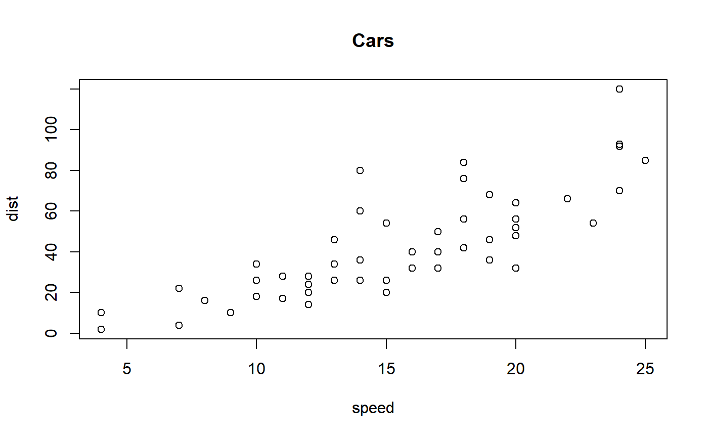
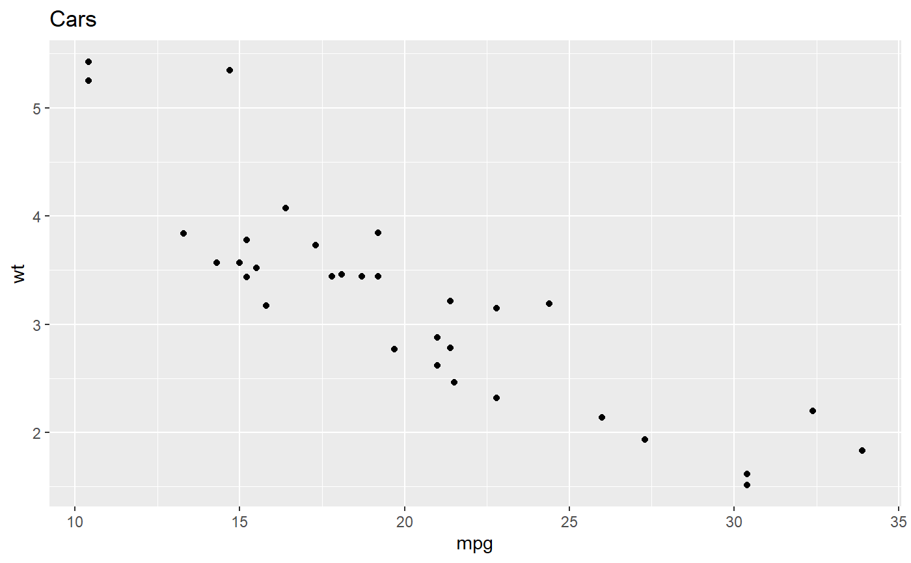
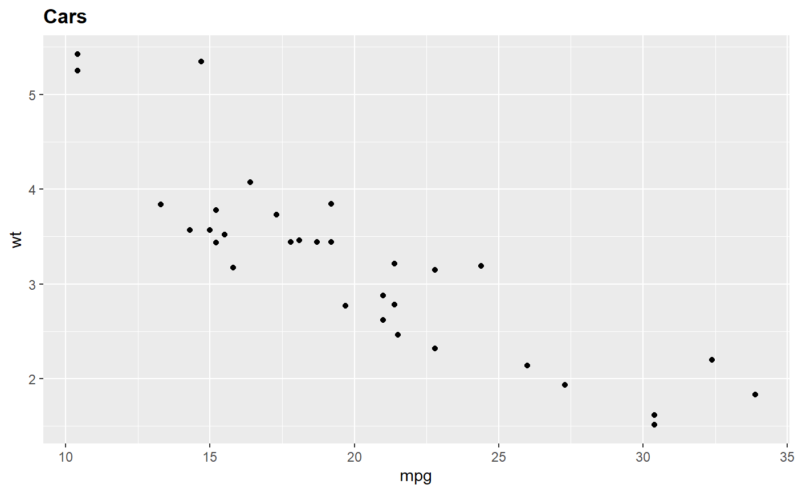
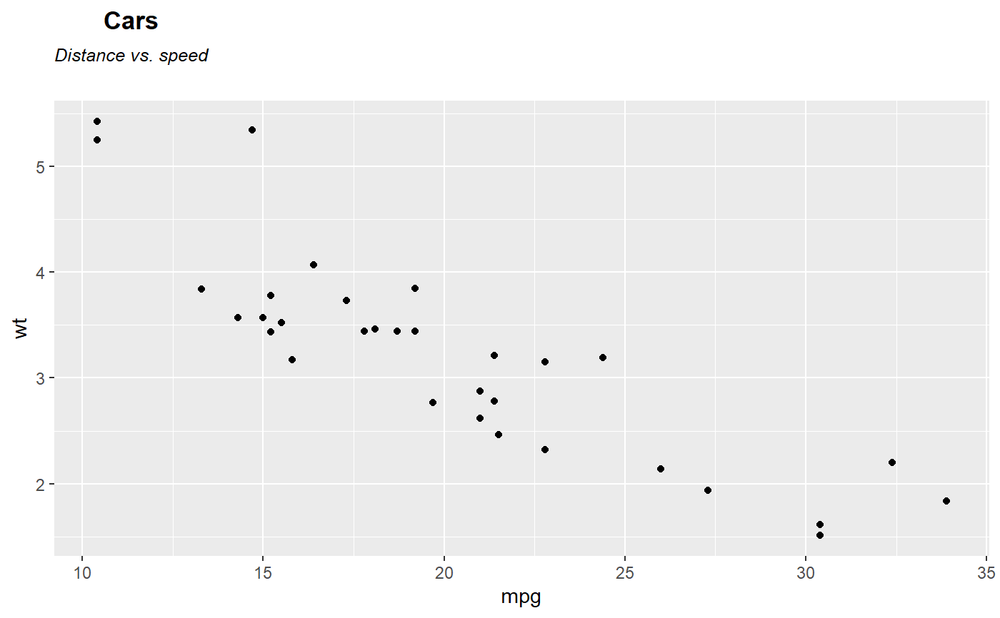
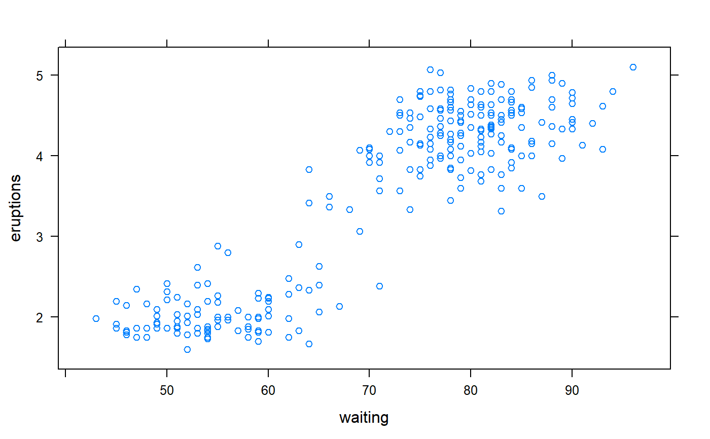
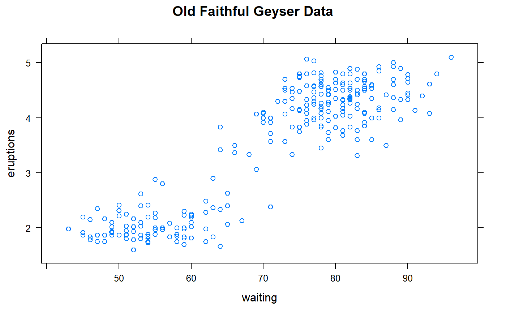

[+] Add bold title and subtitle to a plot
subt.RdAdd bold title with second line in smaller font with subtitle.
Functions bquote and
atop are used to achieve
this effect.
subt(Title = NULL, subTitle = NULL)
Arguments
| Title | The first line of title, which will be in bold. |
|---|---|
| subTitle | The second line of title, which will be smaller and and in italics. |
Value
Formated title.
Warning!
May not work with plotting functions from package hyperSpec.
See also
Other spHelper utilities: IQR_outliers,
expr2text, mad_outliers,
rmExpr, sd_outliers,
unGroup, uncall
Examples
subt("Cars")#> bold("Cars")## bold("Cars") subt("Cars","Distance vs. speed")#> atop(bold("Cars"), atop(italic("Distance vs. speed")))## atop(bold("Cars"), atop(italic("Distance vs. speed"))) # ---------------------------------------------------------------- plot(cars[,1:2], main = "Cars")plot(cars[,1:2], main = subt("Cars")) # the same as in previous lineplot(cars[,1:2], main = subt("Cars","Distance vs. speed"))plot(cars[,1:2], main = subt(subTitle = "Distance vs. speed"))# ---------------------------------------------------------------- library(ggplot2) g <- qplot(mpg, wt, data=mtcars) g + ggtitle("Cars") # non-bold title# ---------------------------------------------------------------- library(lattice) xyplot(eruptions~waiting, data = faithful)